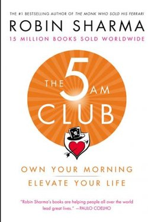

Library › Productivity
The Five AM Club — Summary & Key Lessons

Own your morning, own your life — the 5 AM routine preached by the world's self-help coach to CEOs.
📖 OPEN THE FULL INTERACTIVE BREAKDOWN →🌐 Read it in Hindi, Hinglish, Gujarati, Tamil & 22 more languages — free, with audio.
💡 The Big Idea
Robin Sharma's argument is simple: the first hour of the day is the only hour nobody can steal. Wake at 5, and run the 20/20/20 formula — 20 minutes of movement, 20 of reflection (journaling or meditation), 20 of growth (reading or learning). Then 'talent-stack' habits in 66-day cycles. The book wraps this in a fable, but the core is a tested morning architecture used by top performers.
🧠 The 9 Key Lessons
Lesson 1: The Hour No One Can Steal
Lesson 1: The 5 AM Wake-Up
Before 5 am, the world is quiet: no messages, no demands, no noise. That hour is pure decision space. Sharma's neuroscience claim — the prefrontal cortex is freshest in the first 90 minutes — matches chronobiology. The habit is not about sleeping less; it is about waking earlier consistently, which means sleeping earlier, which most people never try.
📖 Example: A founder who answers email at 5:30 am is still working; one who trains at 5:30 am has won before the day begins. Read the full example →
⚡ Do this: For two weeks, shift wake time 15 minutes earlier per week until you reach your 5 am target.
Lesson 2: The 20/20/20 Formula
Lesson 2: Move, Reflect, Grow
The three blocks: 20 min movement (exercise wakes the body), 20 min reflection (journal/meditation disciplines the mind), 20 min growth (read/study compounds the future). The order is deliberate: body, mind, knowledge. Each block is short enough to be unmissable and long enough to matter.
📖 Example: Twenty minutes of reading a day is ~24 books a year — the quiet superpower of most great writers. Read the full example →
⚡ Do this: Design your 20/20/20: pick one exercise, one reflection format, one book — and write them down.
Lesson 3: Habits Install in 66 Days
Lesson 3: Habit Installation
Sharma's 'habit installation' protocol: 66 days (not 21) to automate a habit, run in 4 phases — overwhelm (week 1), awkward, breakthrough, adaptation. The key is not intensity but consistency: small daily wins, never two days in a row missed, celebrate the third week dip because it is the bottleneck everyone quits at.
📖 Example: Most people quit meditation in week 2-3 — exactly the phase where the wiring is being forged. Read the full example →
⚡ Do this: Anchor your new habit to a fixed cue (wake, shower, coffee) and plan for the week-3 dip in advance.
Lesson 4: Talent Stacking
Lesson 4: Stack Skills
Instead of chasing one world-class skill, stack 4-5 good skills into a combination nobody else has. The 5 AM Club itself is a stack: early rising × exercise × journaling × reading × habit science. Each is ordinary; the stack is extraordinary. This is the same logic as the 'skill stack' used by many creators — and it lowers the bar for entry.
📖 Example: Writing + design + public speaking + a niche domain: a rare combination no single-skill expert can match. Read the full example →
⚡ Do this: List your 5 skills; pick two to add over the next year and design the 20-minute-a-day practice.
Lesson 5: The Victory Hour Philosophy
Lesson 5: Why Mornings Win
Behind the routine is a philosophy: mornings give you the day, evenings take it from you. If your day begins with your response to others' demands, you will always be behind. The early hour is where self-esteem is built — not by motivation but by evidence: 'I kept my promise to myself.' That small evidence compounds.
📖 Example: Two identical days: one begins chosen, one begins borrowed — by nightfall they are entirely different lives. Read the full example →
⚡ Do this: Tomorrow, before any input, do one 5-minute act you chose — then notice the difference in your day.
Lesson 6: The 20/20/20 Rule: The First Hour
Part 2: The Victory Hour
Robin Sharma's architecture for the morning: the first hour splits into three 20-minute blocks — 20 minutes of movement, 20 of reflection, 20 of growth. This 'victory hour' is won before the world wakes, and it sets the day's internal weather; the rule exists because willpower is highest at dawn and the phone is not yet a voter in your attention.
📖 Example: A CEO who runs, journals and reads for 20 minutes each before 6 a.m. controls the day; the same day lost to the phone before 8 belongs to everyone else. Read the full example →
⚡ Do this: Install just ONE 20-minute block tomorrow morning (movement is the easiest start) and stack the other two over two weeks.
Lesson 7: The 10/20/30 Sub-Formula
Part 1: The 5 AM Ritual (Breakdown)
Sharma's detailed sub-formula for the first hour: 10 minutes of movement (wake the body), 20 minutes of reflection (journal or gratitude), 30 minutes of growth (study or read). The structure is what makes it survive — the hour is not one vague resolution but three fixed blocks, and the movement block is the key: you cannot negotiate with a body that is already awake.
📖 Example: The 10/20/30 day is different from the 'I'll meditate sometime' day — the blocks remove the need for the morning negotiation. Read the full example →
⚡ Do this: Build your 5AM hour tomorrow as exactly 10/20/30: sweat, write, read. Keep the blocks, swap the contents.
Lesson 8: The Two Races: The Human Race and the Rat Race
Part 2: The Philosophy
Sharma's slogan distills the book: 'the human race is won by those who are awake early.' The philosophy behind the 5AM club is not productivity for its own sake — it is sovereignty: the first hour of the day is the only hour nobody can claim from you, and the person who owns it starts owning the rest. The rat race is the default; the 5AM hour is the exit ramp.
📖 Example: The CEO who does 90 minutes of deep work before her first meeting has already won the day before most of the world has chosen a side. Read the full example →
⚡ Do this: Claim one hour tomorrow that belongs to you alone — before the world wakes, in whatever form the quiet takes in your home.
Lesson 9: The 66-Day Installation: Habit Economics
Part 3: The Installation
Sharma's claim (from research on habit formation) is that a new behaviour needs roughly 66 days of consistent repetition to become automatic — and most people quit right before the installation completes. The practical rules: start small enough to be unmissable, never miss twice, and count the days visibly. You are not building a habit; you are installing software, and the install log is the tool.
📖 Example: A 66-day streak calendar with an X per day turns a resolution into a visual fact — and the streak becomes harder to break than the behaviour. Read the full example →
⚡ Do this: Start a 66-day counter today (paper or phone). One habit, one mark per day. Missing a day is allowed; missing two is not.
✅ 5-Step Action Plan
- Move wake time 15 min earlier weekly until 5 am.
- Design and run your own 20/20/20 morning.
- Commit to 66 days with a written plan for the week-3 dip.
- Write your current skill stack; add two skills in a year.
- Start tomorrow with a 5-minute self-chosen act before any input.
⚠️ When This Doesn't Work
The fable framing is salesy and the science is loosely sourced; 5 am suits some chronotypes and harms others. The transferable core is a protected first hour with exercise, reflection and learning — not the specific clock time.
💀 The Graveyard Proves It
🕺 MC Hammer — The 200-Person Entourage. Burn: $33M → $13M in debt Read the full case study →
💬 Best Quotes from The Five AM Club
- “Own your morning and you'll own your life.”
- “It is not the strongest of the species that survives, but the most adaptable to change.”
- “All change is hard at first, messy in the middle, and gorgeous at the end.”
Interactive version: mark lessons as read, listen in your language, share quote cards.